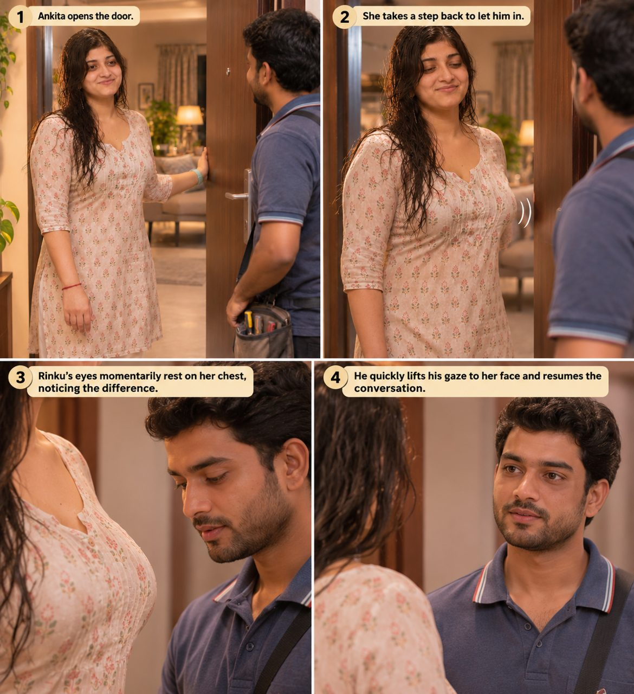
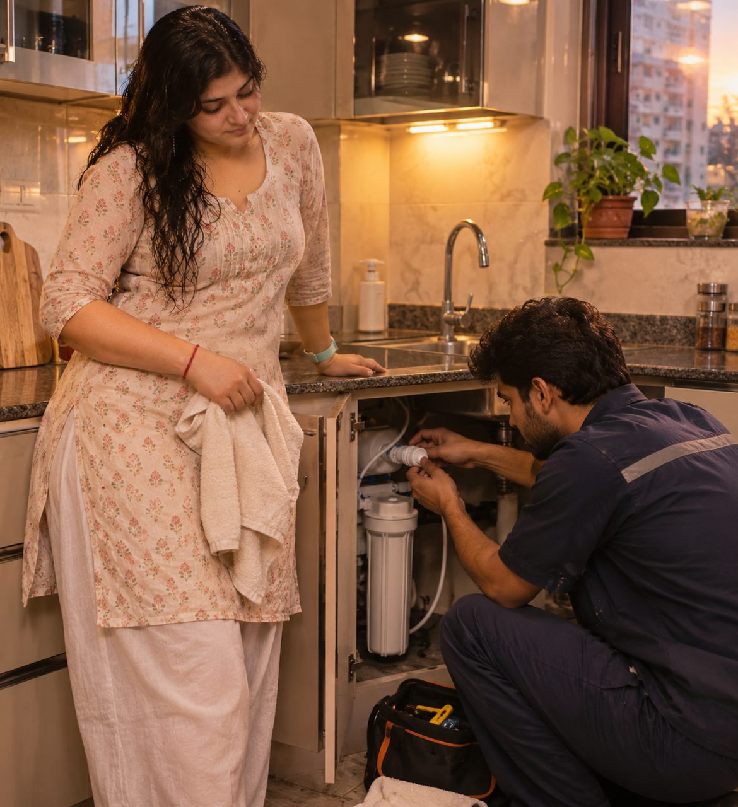
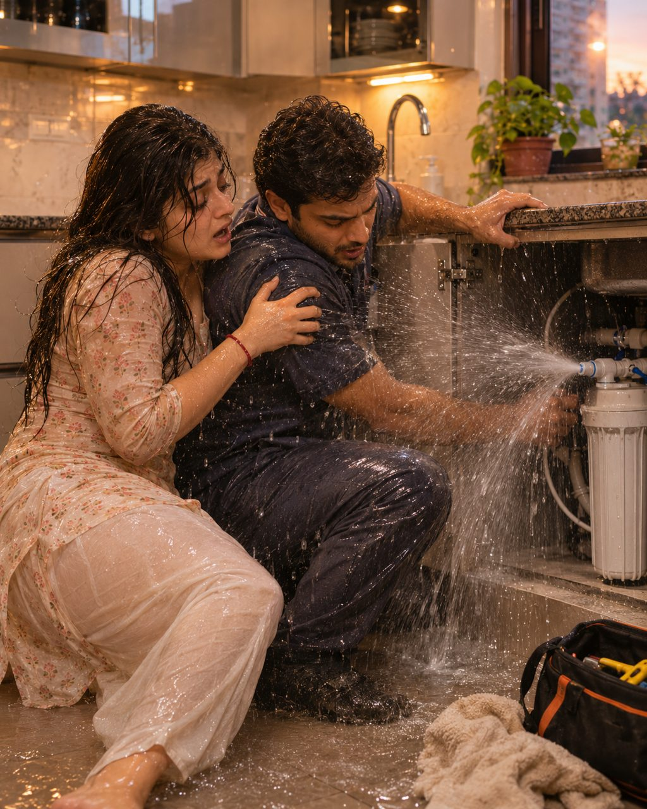
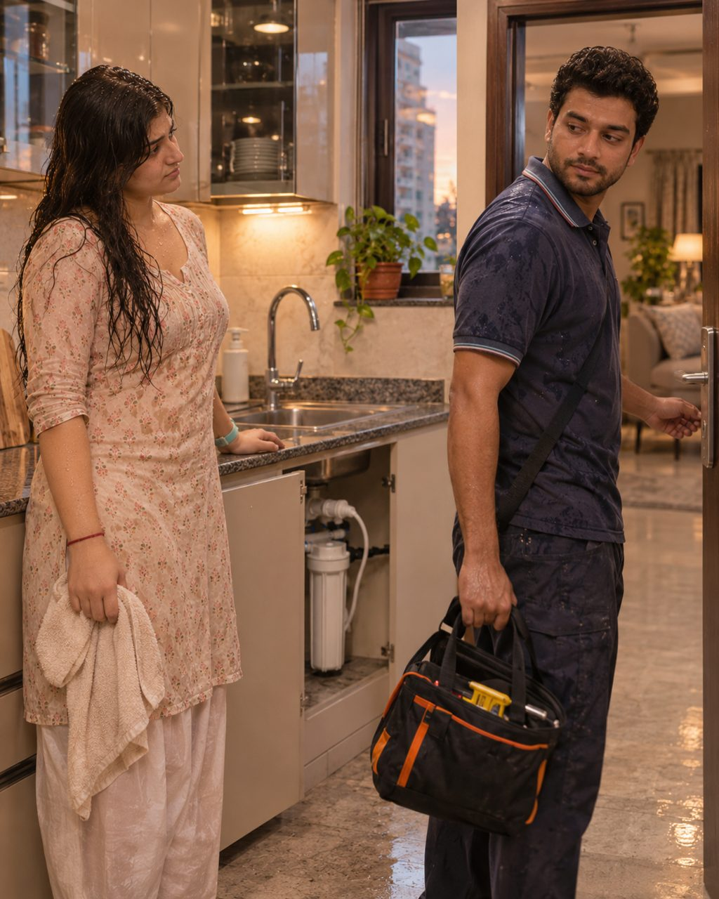
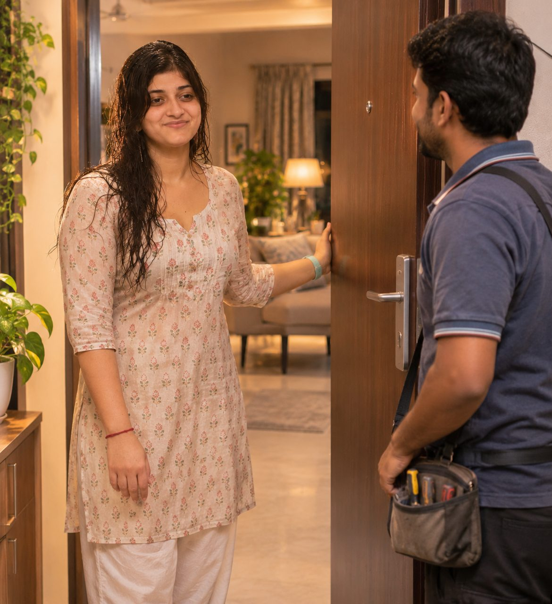
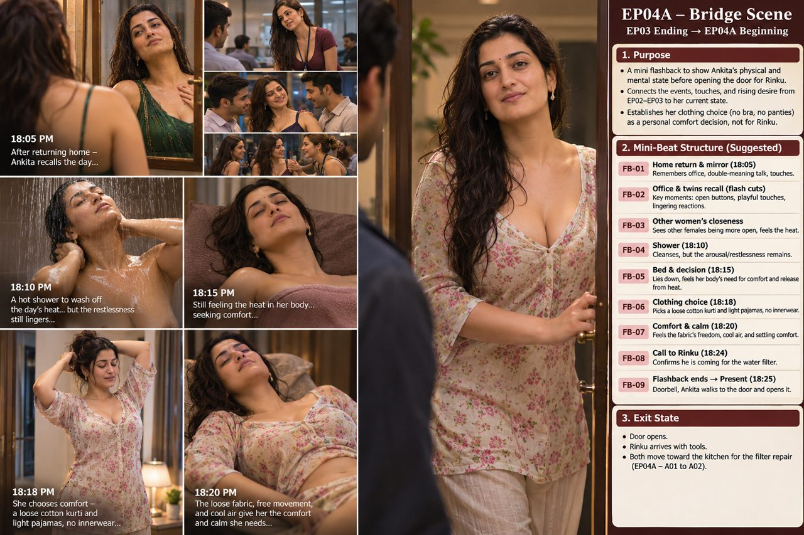
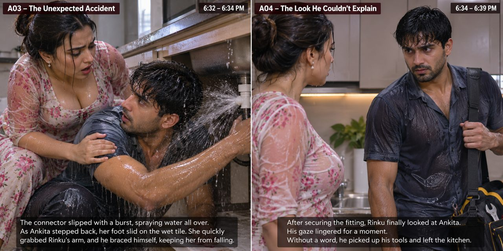
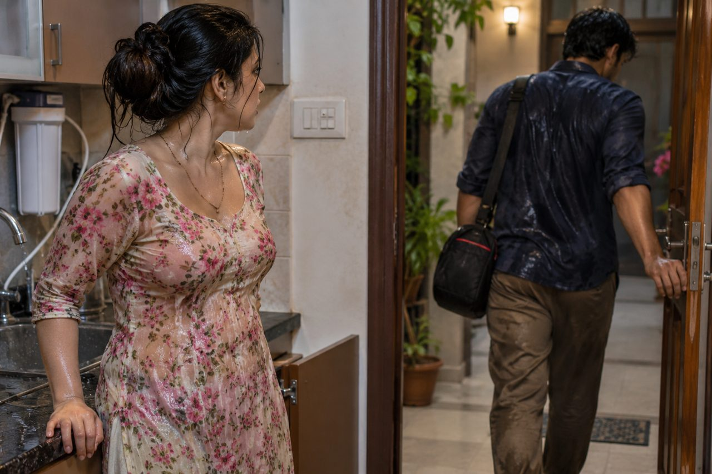
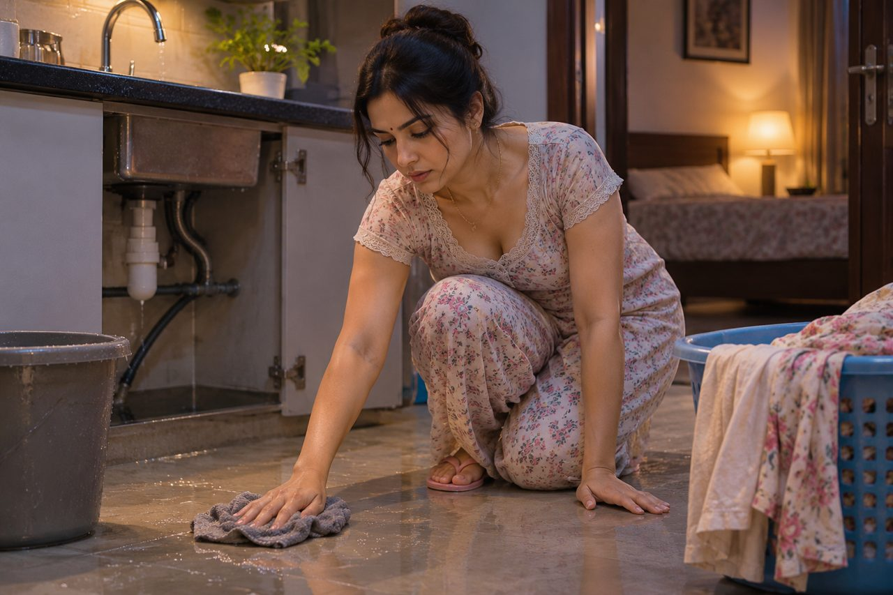

Ankita ghar pahunchi toh 5:50 baj chuke the. Din bhar ki tension abhi bhi uske body mein thi. Office mein nazar, dance floor pe closeness, scooty pe Aman ka haath — sab kuch uski chuchiyon aur neeche ke hisse mein halka sa garam aur tight mehsoos ho raha tha. Bra ke cup ke andar nipples thode hard the, aur panty ke through chut mein ek ajeeb si restlessness.
Usne office wala outfit utar diya. Fitted kurti aur bra dono body pe chipke hue the. Naha kar jab bahar aayi toh thandi hawa ne wet skin pe touch kiya. Chuchiyon ke around halka sa coolness thi, nipples pe soft pressure nahi tha. Woh wardrobe ke saamne khadi hui. Soft cotton kurti aur loose pajama nikaale. Bra nahi pehni. Panty bhi nahi. Dupatta nahi.
Kurti pehente hi chuchiyan support ke bina azaad ho gayi. Fabric halka sa unke weight aur shape ke against rest kar raha tha, nipples ke against soft rub hua. Pajama bhi loose tha. Neeche koi cloth nahi tha, isliye thandi hawa chut ke outer area aur thighs ke beech se guzar rahi thi, cooling feel de rahi thi. Uski body dheere dheere relax hone lagi, lekin din bhar ki andar ki heat abhi bhi baaki thi.
6:18 pe sink pe water-filter ka connector loose dikha. Rinku ko message kiya. 6:21 pe reply aaya. 6:24 pe doorbell baji.
Ab 6:25. Ankita door ke paas khadi thi, kurti aur pajama mein, andar se abhi bhi thodi aware.
Ankita ne darwaza khola. Saamne Rinku apna chhota tool pouch liye khada tha.
Ankita: “Aa gaye, Rinku? Aao, andar.”
Woh darwaze se ek kadam peeche hati. Uski halki floral cotton kurti aur loose pajama ghar ke aaram ke hisaab se the. Bina bra ke, kadam badhate waqt uske seene ki natural movement dheele kapde mein nazar aa rahi thi.
Rinku ki nazar ek pal ke liye wahan thahri. Usne fark notice kiya, lekin kuch kaha nahi. Turant nazar uthakar Ankita ke chehre ki taraf dekha.
Rinku: “Ji madam. Connector check kar leta hoon. Washer bhi laaya hoon.”
Ankita: “Haan, kitchen mein hai. Pata nahi achanak loose kaise ho gaya.”
Ankita aage badhi aur Rinku tool pouch lekar uske peeche kitchen ki taraf chal diya.

Rinku kitchen mein aaya aur sink ke neeche apna tool pouch rakh diya.
Ankita: “Yeh dekho, connector hil raha hai. Subah tak toh theek tha.”
Rinku ne cabinet khola aur neeche baithkar fitting check ki. Usne connector ko halka sa hilaya, phir torch ki roshni mein use dekha.
Rinku: “Madam, washer ka issue nahi lag raha. Coupling mein crack aa gaya hai.”
Ankita: “Toh poora connector badalna padega?”
Rinku: “Shayad. Pehle pressure band karke dekh leta hoon.”
Usne Ankita ko side mein laga shutoff valve dikhaya.
Rinku: “Madam, isko clockwise ghumaiye.”
Ankita ne valve ghumaya. Knob aakhir mein tight ho gaya, lekin Rinku ko fitting mein ab bhi halka pressure mehsoos ho raha tha.
Ankita: “Band ho gaya?”
Rinku: “Poora pressure release nahi hua lagta. Ek towel milega?”
Ankita ne counter se dry towel uthaya aur uske paas khadi ho gayi.
Rinku ne towel fitting ke neeche rakha. Ek haath se connector sambhala aur doosre se coupling ko dheere se loosen karne laga.
Rinku: “Madam, zara side ho jaiye. Paani nikal sakta hai.”
Ankita ne ek kadam hatne ke liye apna weight shift kiya.
Usi waqt fitting ke andar se halki si sisss ki awaaz aayi.
A03 — The Unexpected Accident

6:32–6:34 PM · Revised working prose
Rinku coupling dheere se loosen kar raha tha. Andar se aati sisss ki awaaz achanak tez hui.
Rinku: “Arre—!”
Agla pal sambhalne ka mauka hi nahi mila.
Connector jhatke se khiska aur paani ka tez spray seedha bahar aaya.
Ankita: “Rinku! Arey, yeh kya—!”
Paani lagataar gir raha tha. Kuch hi seconds mein Ankita ki floral kurti aur pajama bheegne lage. Rinku ki shirt aur trousers bhi paani se tar ho rahe the. Dono ke aas-paas floor par paani phail gaya.
Ankita jaldi se peeche hati. Uska pair geeli tile par fisla.
Ankita: “Ahh!”
Rinku ne ek haath se fitting pakde rakhi aur doosra countertop ke mazboot kinare par jama diya.
Ankita ka haath reflex mein uski upper arm tak pahunch gaya. Usne kas kar pakad liya. Rinku ne apna pair jamaya; uski baazu ka sahara lekar Ankita girne se bach gayi.
Do-teen seconds. Dono ek-doosre ke bahut paas the.
Aur paani ab bhi un par gir raha tha.

Rinku: “Sambhaliye, madam!”
Ankita: “Haan… haan, theek hoon!”
Ankita ne grip chhodi aur ek kadam sambhalkar peeche hui.
Ankita: “Pehle paani band karo!”
Rinku turant valve ki taraf jhuka. Usne knob ko zor se ghumaya. Paani ka pressure kam hua, phir spray ruk gaya.
Kitchen ke floor par paani tha. Dono ke kapde bheeg chuke the.
Rinku ne bina waqt gawaaye apna dhyaan damaged connector par lagaya.
Ankita ne apni bheegi kurti ki taraf dekha, phir floor par phaile paani ko.
Ankita: “Yeh toh achha hua main giri nahi!”
Rinku: “Ji madam. Bas fitting secure kar doon.”
Woh apne tools uthane laga.
Rinku ne tool pouch se spanner nikala aur damaged fitting ko temporarily secure kar diya. Uski shirt aur trousers bheeg chuke the. Kitchen ke floor par ab bhi paani phaila tha.
Rinku: “Madam, abhi valve band hi rehne dena. Kal matching connector laakar badal dunga.”
Ankita: “Theek hai. Achha hua zyada damage nahi hua.”
Ankita ne towel se apne haath ponchhe. Uski floral cotton kurti aur loose pajama bhi poori tarah bheeg chuke the. Woh counter ke paas se hatkar Rinku ko jagah dene lagi.
Rinku ne apna tool pouch uthaya.
Phir usne Ankita ki taraf dekha.
Ek pal.
Uski nazar wahin thahar gayi. Haath mein pakde pouch ki strap uski ungliyon se halki si phisli. Usne turant sambhal li.
Ankita ne uske chehre ki taraf dekha.
Ankita: “Kya hua, Rinku?”
Rinku ne jawab nahi diya.
Usne nazar hata li, pouch kandhe par daala aur bina kuch kahe kitchen se bahar nikal gaya.
Ankita wahin khadi reh gayi.

Abhi toh bilkul theek baat kar raha tha… achanak kya hua?
Darwaze ke band hone ki awaaz aayi.
Scene 02 — The Evening Reset (6:45–8:35 PM)
Additional reference visuals from this episode — including previously incorrect versions





Rinku ke jaane ke baad Ankita ne kitchen ka geela floor saaf kiya aur bedroom mein jaakar dry, comfortable kapde pehen liye. Filter ka valve band tha. Rajeev abhi bhi bahar the, Kabir office mein tha. Ankita apne routine household work mein lag gayi. Rinku ki achanak khamoshi ka sawaal filhaal wahin reh gaya.
Scene 03 — The Twins Return (8:40 PM)
Karan aur Aman society se ghar laut aaye. Dono ka din kuch unexpected encounters se bhara raha tha. Karan aaj apni usual teasing ke muqable thoda chup tha. Aman ne uski taraf dekha.
Aman: “Kya hua? Aaj jokes khatam?”
Karan: “Nahi bhai, aaj ke liye quota full ho gaya.”
Aman halki si hansi hans diya. Dono apne-apne kaam mein lag gaye. Ankita ko unki shaam ki encounters ka kuch pata nahi tha, aur unhe Rinku ke incident ka.
Kabir ka around 9 PM call aaye. Office production issue ki wajah se woh shayad 3 AM tak lautega. Ankita thodi disappointed ho, lekin conversation warm aur normal rahe. Dinner ya household routine ko extend nahi karna.
Baad mein Ankita bed par ho. Din ki poori list nahi—sirf ek brief unresolved thought, phir sleep.